A dungeon built like a toy diorama: rooms cut open and seen from above at the Diablo angle, each room lit in its own colour, and everything in it made from pixel-art sprites pushed out into 3D. The plan is one room first. It's a carnival crypt, lit magenta, mixing two folders from my reference library: carnival maximalism and gothic romanticism.
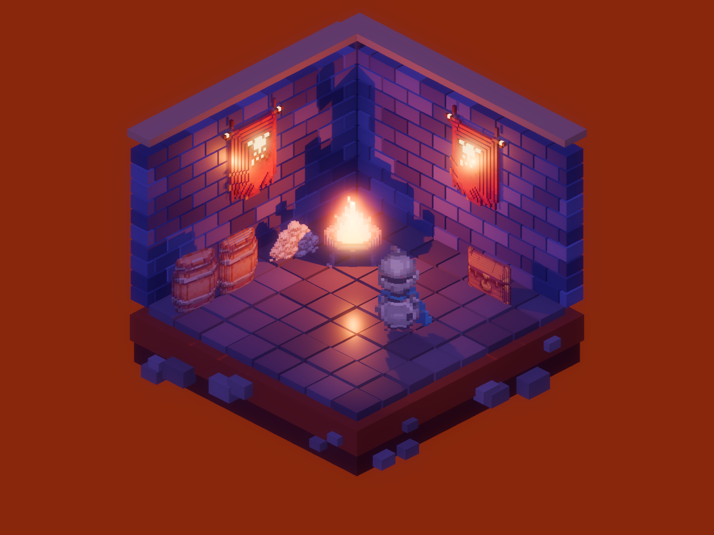
The lighting worked, but the sprites didn't. They came from the cheapest generator style at 64 pixels and were squashed down to 32. They had shading painted in, which fought the real lights. And they were round things drawn from the front, so the barrel turned into a flat card with a bump in it. I threw the set away and started again, one stage at a time.
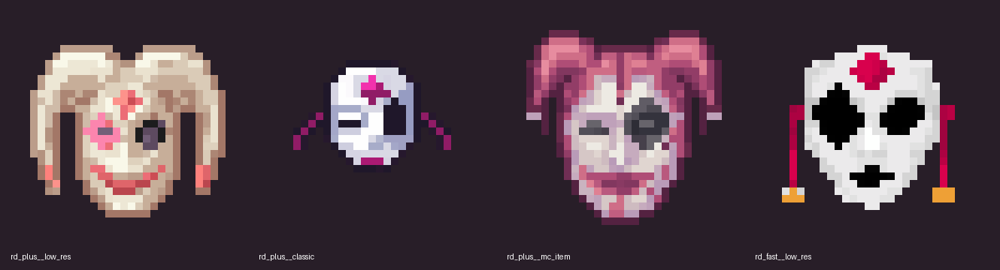
All four styles were useful for different jobs, so each one gets a role: characters, small props, flat wall pieces and big furniture. What holds them together is a shared twelve-colour palette that every sprite is forced into.
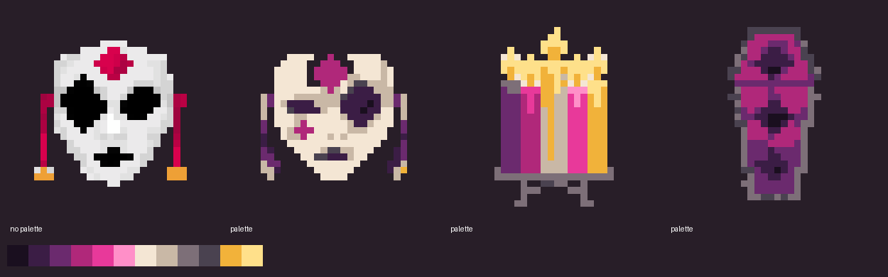
A sprite becomes a stack of voxels. A coffin and a candle can't be pushed out the same way, so there are four rules for it.
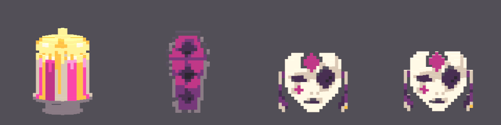
Slab pushes every pixel back the same distance. It suits upright things with a flat front, like the coffin. Lathe spins the sprite's outline around a vertical axis, for round things like candles and urns. Bulge makes pixels deeper the further they are from the edge, so faces puff out like pillows. Relief is bulge with a flat back, and the back can take a sprite of its own. Boxes are folded from an unfolded net, further down.
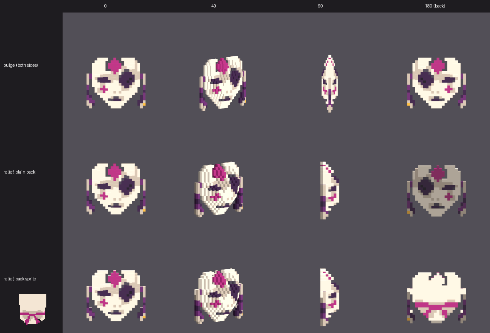
The relief mask with the ribbon on its back looked like a little creature, so the masks became the monsters of this room. Two of them float around for now, at the top of this page.
The first prop made for the room. Three drafts, each a single candle on a tall 32 by 64 canvas, spun with the lathe. All three stayed.
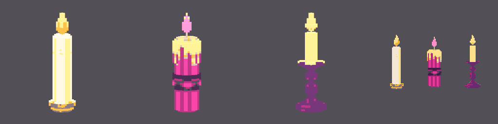
The cluster cost nothing to make. Shorter candles are the same sprites with rows cut out of the middle, so each one keeps its flame and drips. They stand on a dish drawn by hand, forty pixels wide, and everything is merged on one voxel grid. Where two candles touch they fuse together like real wax.
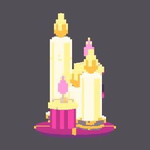
These four had no generator involved. Each is drawn in code, pixel by pixel, from the same twelve colours. The trunk is the first box. It's drawn flat as an unfolded net: lid on top, four sides in a row, base underneath. Then it gets folded up into a hollow voxel box.
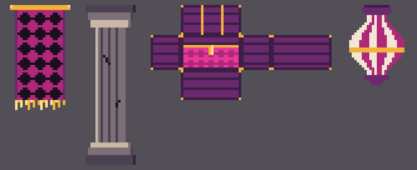
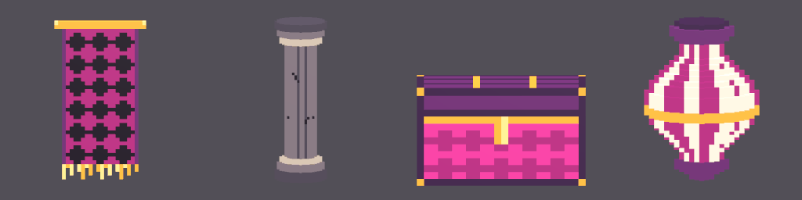
The same four, asked of retro diffusion with the same palette and at the same sizes, three cents each. Its banner, pillar and urn are richer than the drawn ones. The banner has proper diamonds and a rod with end caps, the pillar is weathered, and the urn has a better shape. It wouldn't draw the trunk as a net and gave back a closed chest seen from the front, so that one is pushed back as a deep block, and its sides smear.
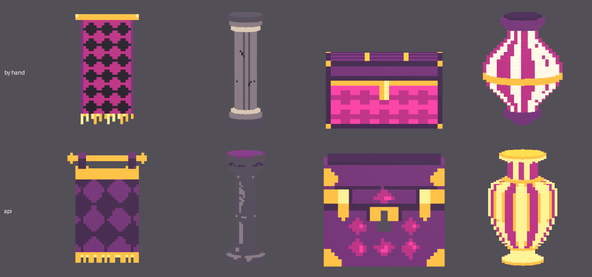
The generated banner, pillar and urn stay. The trunk stays hand-drawn, folded from its net.
Drawn by hand, 32 by 48. The pointed arch comes from two circles, each centred on the opposite side. Inside are a rose of eight petals and three lancets of diamond panes. In 3D each colour gets its own depth. The stone stands three voxels deep, the lead two, the glass one, so the glass sits back inside its frame and the leads stand proud.
The drawing takes settings for width, number of lights, glass colours and what goes in the head of the arch, so variations come cheap. A narrow lancet in ember glass. Two lights under a glass mask, so the room's monsters show up in its windows too. And a round rose of sixteen petals.
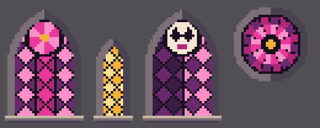
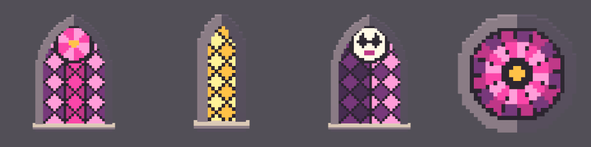
The round rose works better as relief, domed forward over a flat back like a glass boss, with the stone ring stepping down at its edge. All four windows stay.
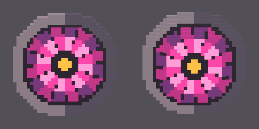
Then the back got hollowed to follow the dome, like a dish, so the rose is a curved shell two voxels thick. From behind, the stone ring steps down into a sunken bowl of glass.
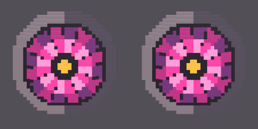
Both drawn by hand. The door uses the window's arch with a thicker ring of stone, oak planks, two iron straps with studs and a gold ring. The planks sit back inside the arch and the straps stand on them. The generated coffin from the palette test came out blobby in 3D, so it was redrawn: six-sided, widest at the shoulders, a harlequin lid and a little mask plaque. It's built as a deep box. The plum rim makes plain sides, the lid stands one voxel proud and the plaque two, and the gold handles become rails down each side.
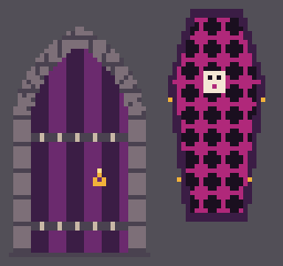
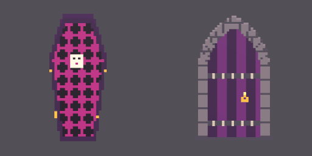
Both stay.
Then a sketch over the old blobby coffin: keep its face, but give it a body. So there's a new rule, a lid on a body. The puffy lid from the bulge test sits on a body that runs the outline back twelve voxels, tapering at the head and foot like a real one. A flat four-voxel lid came first, but a second mock-up asked for the domed one.
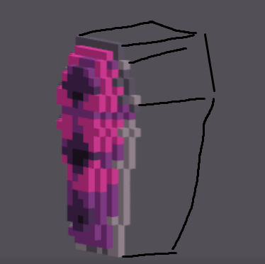
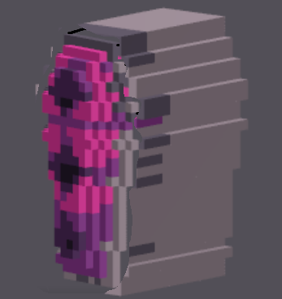
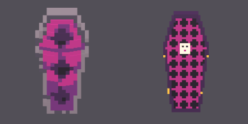
This one stays too.
The second box, drawn as a net like the trunk. A wine cloth with a gold border and a cream runner covers the top. On three sides it hangs halfway down to a gold trim and a scalloped pink ruffle, with stone blocks below, and the back is bare stone. The first try at dressing it used the generated candles, and they towered over it, because they're drawn at a bigger pixel scale than the altar. So the tapers on it are drawn at the altar's own scale, five pixels wide.
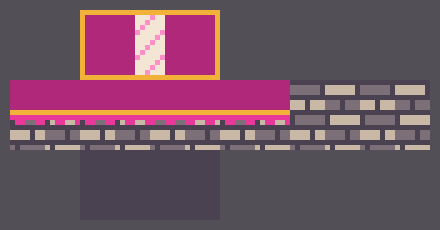
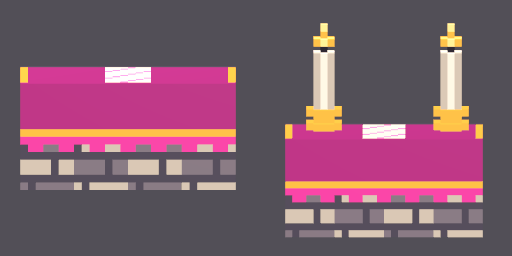
Both versions stay.
A velvet panel on a gold rod with rings, a swinging hem and tassels. Each fold is drawn as shading, from pink on the ridge through wine and violet to plum in the valley. In 3D each of those colours gets its own depth, so the shading becomes real folds. Two panels side by side frame a gap like a stage.
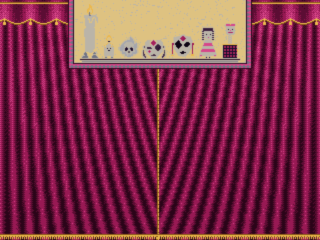
The curtain stays.
A clown in a gilt frame. It has a striped pointed hat, diamond eyes and a wine nose, with a ruff and harlequin shoulders on a dark violet ground. The frame stands four voxels deep and the painting one, so the canvas sits back inside it.
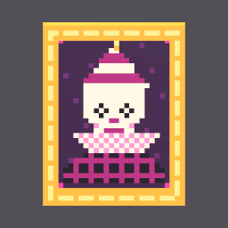
Then two generated portraits to compare, at three cents each. One is a sad clown in a gold and grey frame. The other is a jester in a mask behind thick gold. Their frames aren't in the palette's exact gold, so the depth goes by distance from the edge instead of by colour: anything within four pixels of the edge stands four deep.
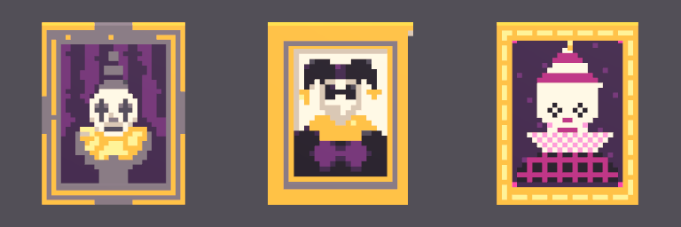
All three stay.
Every prop kept so far, one to a grid cell under flat grey light. Nothing is scaled, so one pixel of every sprite is the same size in the room, and the sizes they were drawn at show up honestly. The generated candles stand taller than the masks, and the generated coffin is half the size of the drawn one.
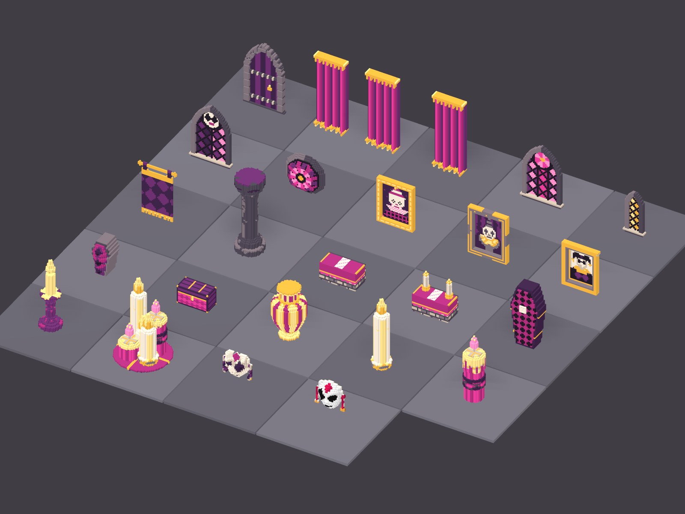
The props put into a room at last, still under flat light. The floor, the two back walls and the plinth are built from voxels the same size as the props, so the bricks and flagstones match everything standing on them. The door, the coffins, the portraits and the banner line the left wall. The altar stands between the curtains under the rose, with the windows beside it. Pillars, the giant candles, the urn and the trunk stand on the floor, and the two masks float in the middle.
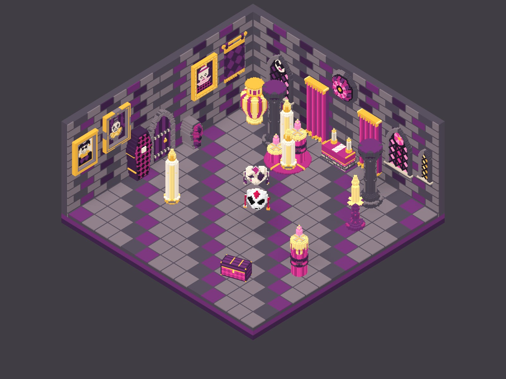
That first room was too loud and too big. The violet in the bricks and floor was as strong as the props, and everything bunched against the back walls. The second pass cuts the walls and floor back to grey stone with the odd violet brick and shrinks the floor from 224 voxels to 160. It also mirrors the room across the diagonal from the back corner toward the camera. The altar turns to face out of the corner between two pillars and two curtains, and every piece on one wall has a partner on the other. The masks hover in the middle as a pair, with the candle cluster in front. The lancet, the banner and the drawn portrait sit this one out.
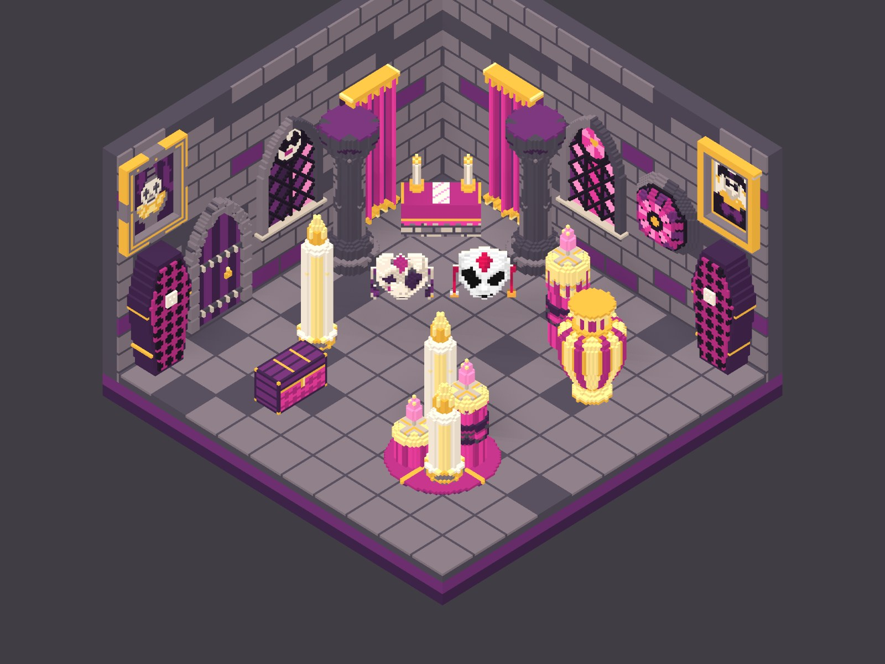
The room is lit by what's in it. Each recipe can mark some of its voxels as glowing, by colour and by height, so a flame glows but the gold frame beside it doesn't. Every glowing part brings its own light. Each candle flame gets a warm flickering light, and each stained-glass window throws magenta into the room as if the sun were behind it. A soft spot falls on the altar, and the two masks each get a faint pink light in front so their faces read. The rest is a dim violet ambient, glow around anything bright, and shadow gathering in the corners.
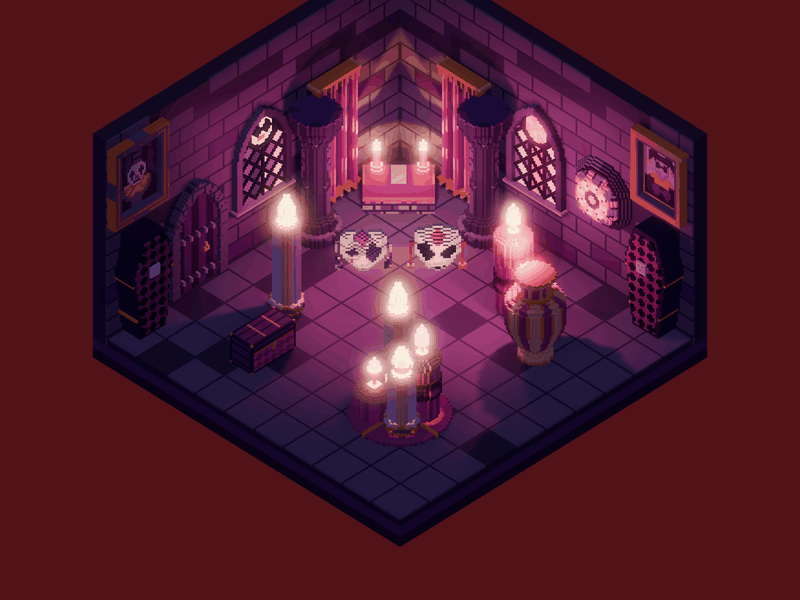
The small things came next, all drawn by hand. There's a wax puddle to lathe, a bone and a skull, and a music box. The box is a net with a dancer spun on its lid and a wind-up key at the back. Tapers gather at the pillars, and two more masks lie asleep face-up on the floor. Every piece still has a partner across the diagonal. The candle cluster became a pair, so the music box has the front of the room to itself. From there an aisle runs between the clusters, past the masks, to the altar.
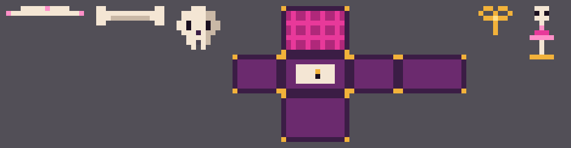
Then the masks were set loose. Each one circles the same point, the two always opposite each other, turning a full circle and bobbing twice per loop. Each carries its own pink light, so the glow moves with them across the floor. The pillars first stopped short of the tops of the walls. Scaling isn't allowed, so they were lengthened like the candles were shortened, by repeating rows from the middle of the shaft until they stand ninety-six voxels tall.
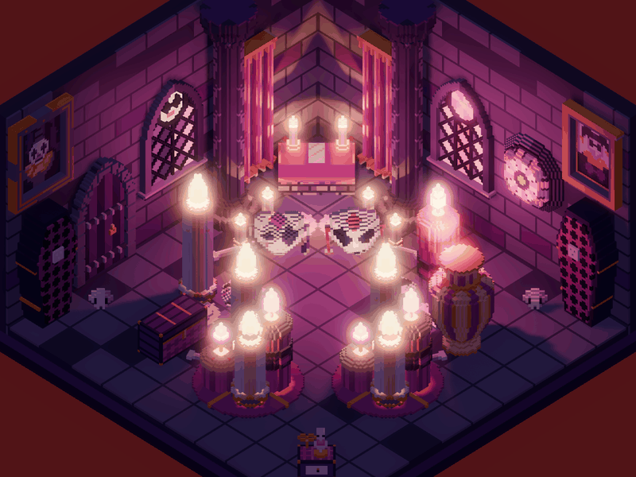
The second room mixes two other folders from the library, candy character art and biomechanical grotesque. That means cute bodies with the wrong anatomy, and props that are half alive. Nothing is decided yet, so it starts with drafts. There are two palettes, acid and lavender, and four creatures drafted in both, next to three drawn by hand. One is a wrapped sweet with three stacked eyes, one a lollipop whose spiral coils into an eye, and one a sliced jawbreaker with an eye for a core.
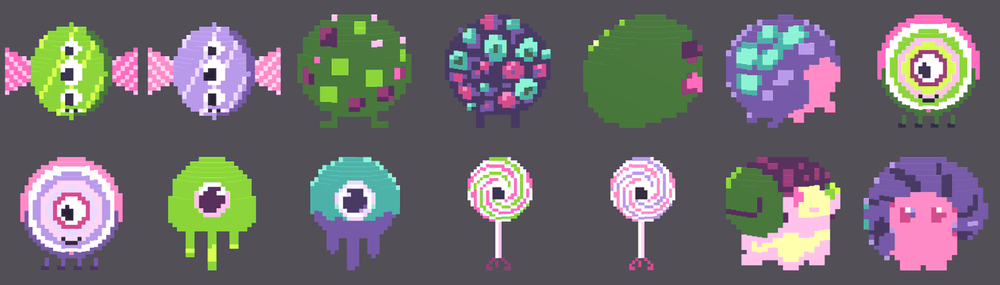
Then a reference came in, and it was wilder than any of these. Its creatures are gangly, all claws, wings, tails and antlers, with big glossy eyes and patterned skins. One has zebra stripes, one a turquoise checkerboard, one red flecks on pink. A third palette was taken from it, and six creatures drafted side-on, since a profile extrudes well. The generator dropped the patterns at that size, so the stripes, checks and flecks were painted back on by hand.
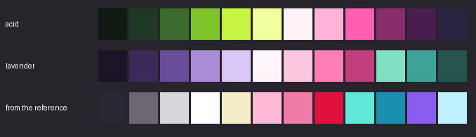
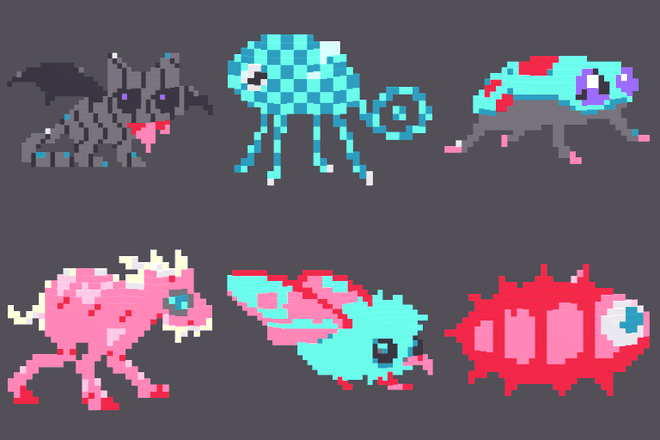
The ones kept were the many-eyed balls, the jawbreakers, the one-eyed jellies and the lollipop eyes, each in both palettes, and the pink fleshling with its red flecks.
A creature that's mostly eye shouldn't have one on its back as well, but relief puts the front picture on both sides. So each one got a back, drawn without its eyes. The eye pixels are grown over with body colour, or on the lollipop and the jawbreaker the spiral and rings just carry on through. Now the front domes forward and the back domes backward, each with its own picture. The fleshling is drawn side-on, so its far side keeps a matching eye.
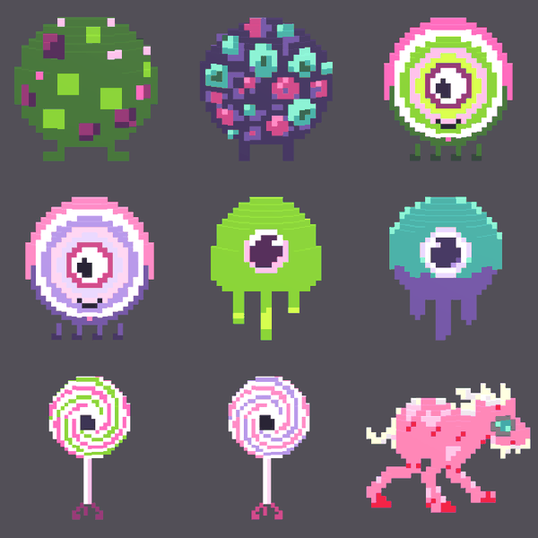
Every creature kept was mostly eye, so the room should be somewhere eyes are grown, kept or sold. Three small rooms tried it, each in its own palette and lighting. A hatchery glows green from its tank of frogspawn eyes, with egg racks, incubators and speckled eggs. An optician's in lavender has eye charts, cabinets of eyes in jars and specimen jars. A sweet shop under a sky-blue backdrop has a striped counter, gumball machines full of eyes, eyeball cupcakes and pails of lollies, with the fleshling wandering through. The room builder now takes any room file with its own wall, floor and light colours.
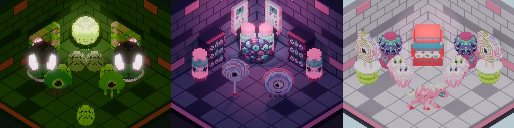
All three stay, as three different rooms: one where the eyes are grown, one where they are kept and one where they are sold.
The first of the three to be built out to full size. Its centrepiece is the generated tank of frogspawn eyes, stretched to sixty pixels by repeating rows of glass. It stands in an iron ring under a valve cap, both drawn by hand, and glows lime from the back corner. Pipes run up either side. The walls carry honeycomb brood cells and the generated egg racks, with egg sacs hanging near the top. On the floor are incubators, nests of eggs under brood lamps, two eggs mid-hatch with an eye at the crack, the many-eyed balls and a slime trough at the front. The two jellies hop in a slow circle in the middle.
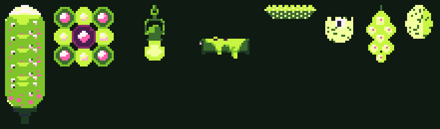
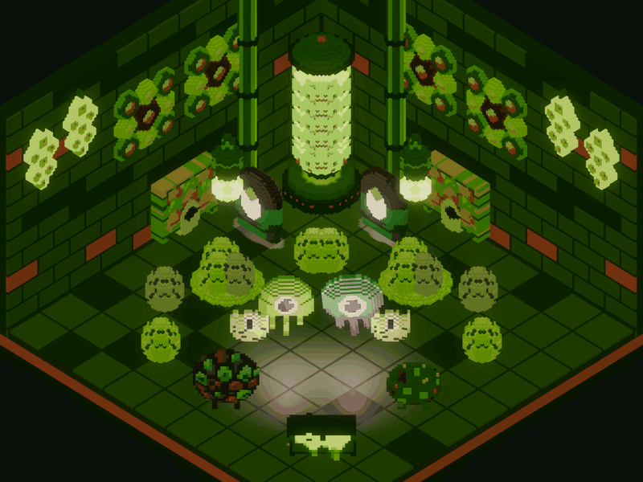
Where the eyes are kept, in lavender. The centrepiece is drawn by hand, a giant eye forty pixels across on a fluted pedestal, its mint iris glowing and a web of pink veins running to the nerve on its back. Eye charts, cabinets of jarred eyes and boards of spectacles hang on the walls. Below them are two examination chairs, two cut-open eye models, specimen jars, eye-drop bottles and a few loose glass eyes. The lavender jawbreaker and lollipop hop round each other in the middle.
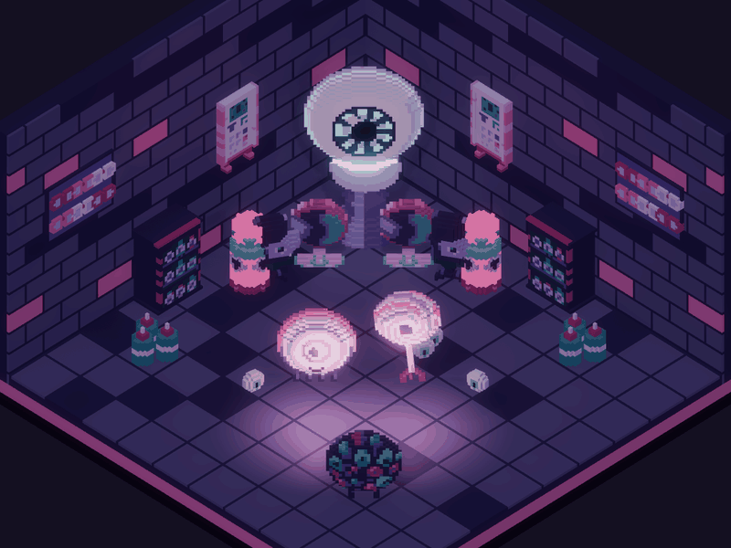
Where the eyes are sold, in the reference's own colours. A giant jar of candy eyes stands in the corner between two giant lollipops. The lollipops are the lolly creatures lengthened to sixty-four pixels by repeating rows of stick. In front are the counter, shelves of sweet jars, cash registers with an eye for a display, gumball machines, candy-floss carts with an eye in the floss, sundaes, cupcakes, gumdrops and wrapped sweets. The fleshling walks a slow loop through the middle. It first floated and spun like the masks, which is wrong for something with three legs, so legged creatures now get a walking gait. They keep their feet on the floor, always face the way they're going, and bob and rock a little on each step.
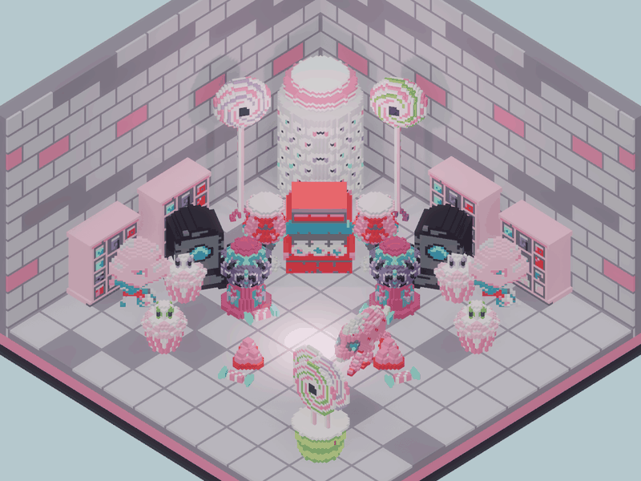
All of this is turning into a dungeon crawler, closer to Enter the Gungeon than Diablo. You go room to room shooting your way through, on levels generated from the pieces above. The player is a placeholder capsule for now, with twin-stick controls and a dodge roll.
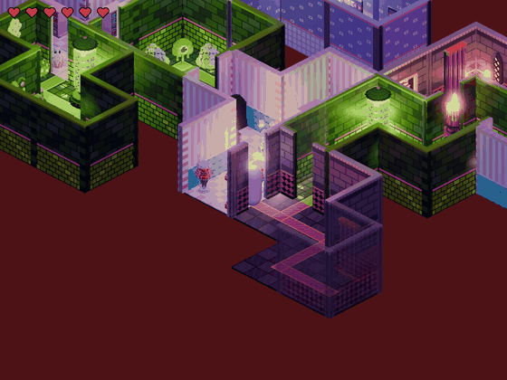
A floor is nine rooms, each shaped like a tetromino and packed against the last as in Tetris, with a door wherever a new room grew from an old one. Every room takes one of the four themes, so a level wanders from crypt to hatchery to sweet shop. Props stand around the corners of each cell and leave the middle lines clear. Those lines are where the runners go, carpets in the theme's colours from door to door, so the way through a room reads at a glance. The biggest cell holds a centrepiece. Flat-backed furniture like coffins and cabinets finds a wall and stands square against it.
The first walls and floors were plain grey brick and flagstones, too generic for rooms this particular, so each theme now draws its own, voxel by voxel. The crypt has a harlequin wainscot under a gold rail, gothic stone with a bone cornice and dark marble. The hatchery has honeycomb tiles under mossy brick and wet green tiles with slime. The optician's has clinical white tiles, lavender wallpaper printed with small eyes and a checker floor. The sweet shop has candy stripes over a mint wainscot, a scalloped cream top and pink checks. A wall between two rooms is painted on each side to match. Every room brings its own light and its own creatures.
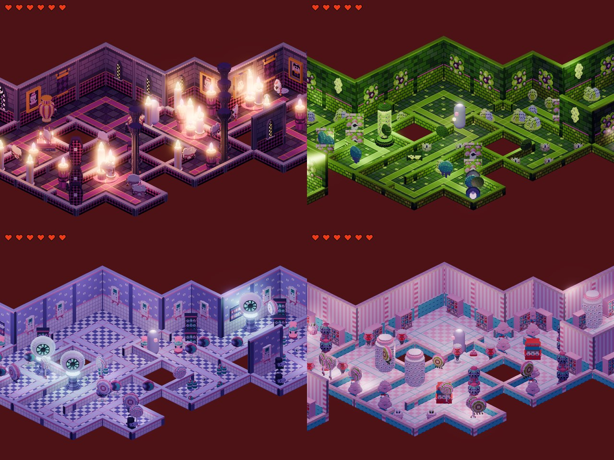
The creatures made for the rooms are the enemies. Masks, eyeballs and jawbreakers float, keep their distance and fire rings. Jellies and lollipops hop toward you and spit three at a time. The fleshling walks after you on its three legs and fires in bursts. Beaten, they burst into chunks of their own colours with a flash of their room's light.
The props are cover, and cover doesn't last. Every solid thing can be shot down from either side, and bigger things take longer. A hit throws sparks in the bullet's colour, chips off a bit of the prop and leaves a scorch that fades. When something finally goes it bursts the same way the creatures do. The rubble rests a moment, then sinks into the floor.
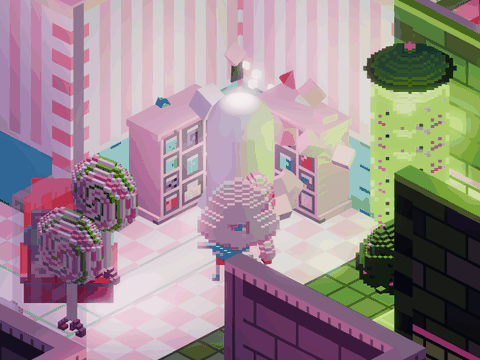
Every wall stands full height, so the rooms feel enclosed. Rays run from the player toward the camera, and a wall they pass through fades away completely. The other walls of your room on the camera's side drop to a quarter, so you can see inside without losing its outline. The camera orbits the player with the right mouse button, or in quarter turns with Q and E, and the fading follows it round. The first version of the orbit swung wildly. The follow script eased the camera's position in a straight line and aimed it at the wrong point, so mid-turn it cut across the circle. Now a point eases after the player, and the camera always sits on its circle round that point, looking straight at it.
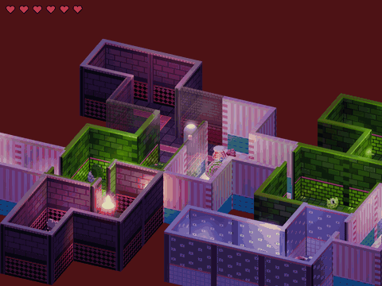
After a round of play the rooms felt cramped, so cells are twice the size now, and big cells are dressed as four smaller spots. Doorways stop at a lintel instead of running floor to ceiling. Creatures only step where they stay inside their room and clear of props, so they can't be shoved into walls any more. The game is three floors. The crypt comes first, then the hatchery and optician's together, then the sweet shop. Once a floor is cleared, the way down opens as a glowing disc in the room farthest from the start. Every number behind all this sits on a slider in a dev menu, along with a plain account of how a floor is put together.
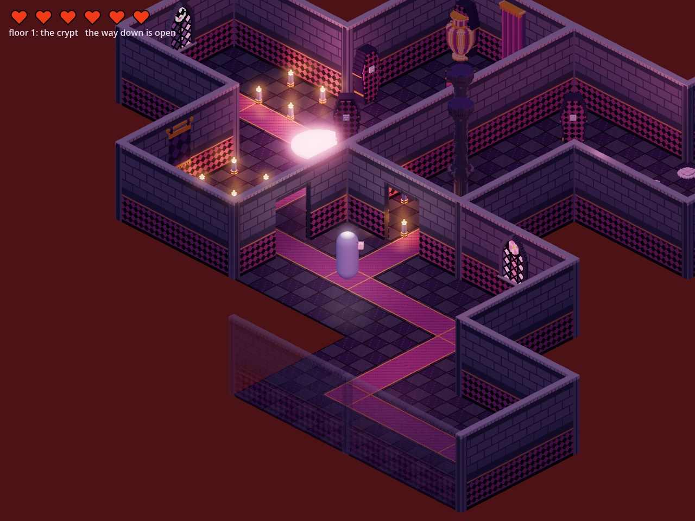
Under each floor lies a marbled field of colour, bands folding through each other like paint on water, in a palette for that floor. The crypt sits on neon over a starry dark. The hatchery and optician's float over acid green, yellow and orange, and the sweet shop over a soft rainbow. Each level's seed shifts the swirl. When the camera turned, the field first swung round with the level, which was dizzying. Now it counter-turns about the player and holds still while the rooms rotate over it.
Rooms you haven't reached are already there, filled to the top of their walls with drifting fog. It's navy in the crypt, green on the second floor and pink in the sweet shop, all with white wisps through it. Coming up to a doorway breathes it out over about a second. A first try hid unseen rooms outright and let them pop in, which looked wrong.
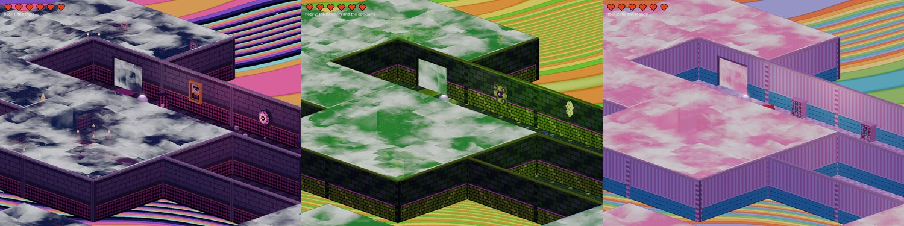
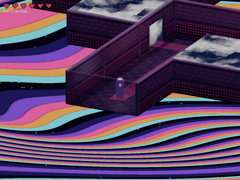